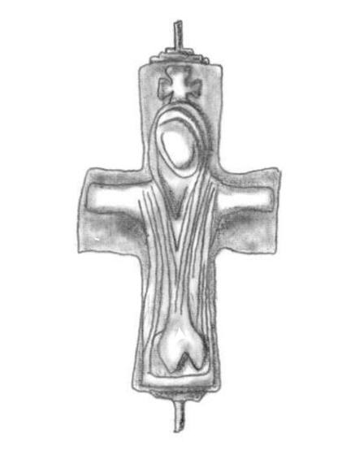

Catalog › CE-0351 · COS2022-IC-13
Valvă de encolpion de bronz, Capidava, repertoriu IC 2.13
sec. X–XI (901–1100) · Capidava, jud. Constanța, România
single valve of a reliquary cross, bronz; c. X–XI (901–1100); found at Capidava, jud. Constanța, România.


Identificare
- Categorie
- Valvă izolată
- Material
- Bronz
- Tehnică
- Turnare în relief
- Dimensiuni
- Î 55 × L 35 mm
Iconografie
- Descriere avers
- Descrierea tipului IC, după autor: Hristos răstignit, cu capul înclinat spre dreapta, cu mâinile întinse până la capetele brațelor crucii, în veșmânt larg căzut în falduri, redat schematic prin linii simple; fără busturi la capetele brațelor. Pe această piesă: Deasupra capului lui Hristos este o cruce; corpul se sprijină pe un suppedaneum foarte schematic (Pl. 10/6).
Datare și atribuire
- Datare
- sec. X–XI (901–1100)
- Tipologie
- Cosma 2022, tip IC
Descoperire
- Localitate
- Capidava
- Regiune
- jud. Constanța
- Țară
- România
- Context
- Așezare
- Coordonate
- 44.4967° N, 28.0912° E
- Precizia locului
- Doar localitatea
Păstrare și referințe
- Bibliografie
- C. Cosma, Tipuri de cruci relicvar bizantine din bronz cu figuri în relief, descoperite pe teritoriul României, în „Crisia”, LII, 2022, p. 111–140 (studiu p. 111–129, planșe p. 130–140) [Cosma 2022], p. 125, repertoriu IC 2.13, reprodusă la Pl. 10/6 (p. 139). Piesa citată în repertoriu după: Mănucu-Adameșteanu 1984, p. 375–376, nr. 1, pl. I/1.
- Figura
- Pl. 10/6
- Planșe
- Cosma 2022, p. 139
- Observații
- Descoperită într-o locuință din nivelul încadrat de autor în sec. XI. Localitatea apare în repertoriul tipului IA cu județul Tulcea, iar în cel al tipului IC cu județul Constanța. Colecția și inventarul nu sunt date în sursă. Coordonate: ale localității (aproximative), nu date în sursă. Număr în repertoriul autorului: 2.13 (tip IC).
Citare: Corpus Encolpiorum, CE-0351, Valvă de encolpion de bronz, Capidava, repertoriu IC 2.13, --root/piese/COS2022-IC-13/ (accesat 2026-10-20).